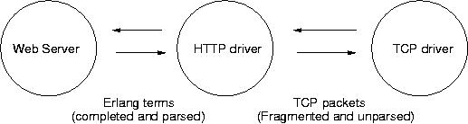

This tutorial shows you how to build a simple web server. All the code is here. The web server runs as a system daemon. About half this tutorial is concerned with setting up a system demon. The other half is about the design and implementation of a simple web server - this web server is extremely simple - it's only three modules - but it does illustrate a few common programming techniques. As an added extra I also show how to test the code. Please, report all errors, omissions or improvements to the author.
1. Design of a web server
The web server is typical of a large number of programs. It involves the interaction between Erlang an some entity operating in the outside world. In order to do this in a consistent manner we write a device driver which we use to interface the external world with Erlang. As far as an Erlang process is concerned, all other objects in it's universe are Erlang processes. The only thing that an Erlang process knows how to do, is how to to send to and receive messages from other Erlang processes. A web server is therefore a simple process that receives a message containing a request to read a page and which responds by sending that page to the process which requested the page. The code for a simple web-server is something like:
Here Request is an Erlang term representing a parsed HTTP request, and Response is Erlang term representing an HTTP response. We also need some deep trickery to arrange that one instance of this process is started for each incoming request, the deep trickery is done in tcp_server.erl . The above server is pretty simple, but it can only handle a single request. HTTP/1.1 persistent connections could be handled as follows:
This 11 line function handles HTTP/1.1 persistent connections, and does data streaming etc. the entire web server code is in web_server.erl . Now recall that HTTP requests, are not simple Erlang terms, but are actually TCP steams, which obey an ad hock syntax and grammar - just to make life even more interesting, the TCP streams can be arbitrarily segmented. For this reason we introduce an intermediary process (called a middle-man) The middle man is a process whose only job is to recombine fragmented TCP packets, parse the packets assuming they are HTTP requests, and send the requests to the web server. This is shown below:  The structure of the http driver is simple:
If a packet comes from the client, via a tcp socket, it is parsed by calling parse_request/4, if a message comes from the server it is sent directly to the client, and if either side terminates the connection, or an error occurs in the server, the connection is closed down. If this process terminates for any reason all the connections are automatically closed down (to see why this is so you should examine the link structure of the the program). The variable State is a state variable representing the state of simple re-entrant parser that is used to parse the incoming HTTP requests. This code is in http_driver.erl
The web server is built from two main modules web_server.erl and http_driver.erl - the http driver is a simple re-entrant parser that interfaces the web server to the external world. The web-server thinks it is taking to an Erlang process. All the nasty little details of re-entrant parsing, and packet assembly are hidden in a device driver.
We want to run our web server as a system daemon. A system daemon is a program which is automatically started when the system is started. To do this is system dependent. The notes below show how to make a system demon on my red hat 7.3 Linux machine. If anybody would like to mail me the details for how to do this for other operating systems I will happily include the details in the tutorial.
In the end of the file /etc/rc.d/rc.local I have edited in the following line:
This runs the script /etc/rc.d/joe_services.sh in the background. Note the & is very important - running this in the foreground can be disastrous and may deadlock your system :-) joe_services.sh is as follows:
This script is run as root. The command su joe $i start runs the shell script $i as user joe - note not as root. The directory /home/joe/services contains, among other things a file web_server.sh which is as follows:
For debugging I start the system with the command web_server.sh debug. In production the server is started with the command: web_server.sh start. This starts Erlang with the flags -detached -heart
Starting Erlang with the flag -detached starts Erlang in detached mode. In detached mode Erlang runs silently in the background without a controlling terminal.
Starting Erlang with the flag -heart starts Erlang in heartbeat mode. In heartbeat mode an external program monitors the Erlang system - if the Erlang system dies the system is restarted by evaluating the command in the environment variable ERLANG_HEART. The value of the environment variable is $PA/web_server.sh start and so the program just gets restarted. We can see this as follows, first we list all the Erlang processes then we start the web server and check which Erlang and heart processes have been started:
Process 31367 is the Erlang web server. Process 31369 is the heartbeat processes which is monitoring process 31367. We now kill process 31367 and check to see what happens:
here we see that a new Erlang process and a new heartbeat process were started. The new Erlang process 31386 is the web server and it is monitored by process 31388. The only way to the web server is to first kill the heartbeat process (31388) and then kill the Erlang process (21386). Alternatively, running the script web_server.sh stop will stop the web server in a controlled manner. The above method of making a system daemon is in practice very reliable. The Wiki web at http://www.bluetail.com/wiki/ uses this technique and has been running for about two years without manual intervention.
We saw in the previous section how to use the -heart flag to restarting the entire Erlang system in the event of failure. While testing my programs I almost automatically perform a coverage analysis. The code in web_server.erl contains code to perform a coverage analysis. The relevant parts of the code are as follows:
To run the coverage analysis I cold start Erlang, then give the command web_server:cover_start() in the Erlang shell. I then give a few commands in my web browser (to exercise the program). Then I move back to the command shell and give the command web_server:cover_stop() - this produces a number of file with names like web_server.COVER.out - these files can then be inspected to see how many times each individual line of code was evaluated. At least - that's the theory - when I last tried this I got an error - if anybody knows why I'd be grateful if they told me :-) |